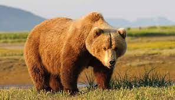

Habitad

Los osos pardos habitan un paisaje humanizado, un mosaico de bosques, matorrales, pastos y pueblos habitados. Son fundamentalmente vegetarianos, aunque también consumen miel e insectos y en ocasiones carroñas.
Caracteristicas
espeso y tupido pelaje
- su enorme cabeza
- su pequeña cola
- dos pequeñas orejas redondeadas
- Es el animal terrestre más grande de toda la fauna ibérica
menú